Released on May 13, 2009
(Next Release on May 20, 2009)
Surplus Oil Production Capacity and World Oil Prices
Last month the National Football League (NFL) held its annual draft. Prior to making their selections, NFL teams evaluated the talent pool by looking at the overall performance each player delivered for his college team, and at specific indicators, such as their time in a 40-yard dash or how much they can bench press, to determine which players might be the best draft picks. In trying to forecast short-term oil prices, it is also important to consider recent market trends along with a range of more specific factors to really understand the total picture.
One of these factors is surplus oil production capacity. Low and falling surplus production capacity generally characterizes a tight market and firming prices, while a high and rising level of surplus production capacity signals a loose market balance and weakening prices. The members of the Organization of Petroleum Exporting Countries (OPEC) generally hold almost all of the world’s available surplus crude oil production capacity, providing them with the ability to alter production levels to influence global oil prices and manage market conditions. Saudi Arabia and other Persian Gulf countries usually hold the bulk of available surplus production capacity, with Saudi Arabia stating it wants to maintain 1.5 to 2 million barrels per day of surplus capacity. In contrast, non-OPEC countries generally produce at capacity and tend to have surplus capacity only when oil prices are so low that marginal production is unprofitable and is shut-in.
Tightening market conditions — rising demand and limited growth in non-OPEC supply — reduced OPEC surplus production capacity from 5 million barrels per day in 2002 to about 1 million barrels per day by mid-2008, putting upward pressure on prices. The 2002 to mid-2008 period was characterized by an unprecedented sharp and steady rise in WTI crude oil prices from $26 per barrel in 2002 to over $140 per barrel at the beginning of July 2008. By the end of this period, oil producers were operating at 98 to 99 percent of capacity, amplifying concerns that the market would be vulnerable to geopolitical events that could reduce supply.
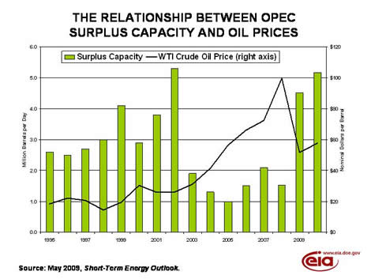
More recently, events have caused surplus capacity to increase dramatically. The current global economic recession has cut oil demand, prompting OPEC to curtail output to keep prices up. The combination of OPEC production cuts and previously planned capacity additions in OPEC countries has resulted in the re-emergence of rising and substantial surplus capacity. Surplus capacity has risen from a 30-year low of about 1 million barrels per day in the third quarter of 2008 to 4 million barrels per day in the first quarter of 2009.
The future trend in surplus capacity will depend on oil demand trends, gains in non-OPEC production and OPEC capacity additions. As in some non-OPEC countries, some planned additions in OPEC countries will likely be delayed in response to weak oil market conditions. Most of the planned additions in OPEC are located in Saudi Arabia, which has plans to add over 2.5 million barrels per day of new capacity by 2012, led by the Khurais, Nuayyim, and Shaybah projects. And future prices will depend, in part, on the level of surplus capacity, which can serve to dampen any increase in prices that follows an economic recovery and the expectation of oil demand growth.
Global surplus capacity is clearly important, but oil prices can also be influenced by other fundamental and non-fundamental factors. Although forecasts of future oil market conditions, like the projections of the future performance of this year’s NFL draftees, are inherently uncertain, the development of forecasts that are likely to be most useful requires a good understanding of many contributing factors and indicators.
Gasoline Price Surges, Rising More than 16 Cents
The national average price for regular gasoline surged more than 16 cents to $2.24 per gallon. Despite tallying the largest increase since September 15, 2008, the price was $1.48 less than a year ago and $1.87 below the all-time high set on July 7, 2008. Prices increased in every region of the country. On the East Coast, the price shot up 16 and a half cents to $2.21 per gallon. The average price in the Midwest gained the most of any region, jumping almost 21 cents to hit $2.26 per gallon. The average price on the Gulf Coast remained the lowest in the Nation despite shooting up nearly 18 cents to $2.13 per gallon. In the Rocky Mountains, the price rose nearly 9 cents to $2.18 per gallon. The price increase on the West Coast was the smallest among the regions, but still climbed seven and a half cents to $2.37 per gallon. In California, the average price was $2.42 per gallon.
For the first time in four weeks, the national average price of diesel fuel rose, gaining 3 cents to $2.22 per gallon. The price was $2.12 below last year and $2.55 less than the all-time high price recorded on July 14, 2008. Prices in all regions of the country increased with the East Coast moving three cents higher to $2.26 per gallon. The Midwest price also went up three cents, to $2.16 per gallon. The average price for the Gulf Coast increased the most of any region, growing four and a half cents to $2.20 per gallon. The increase in the Rocky Mountains was the smallest of any region, creeping up nearly a penny to $2.27 per gallon. The West Coast moved up more than two cents to $2.33, while the price in California rose two cents to $2.34 per gallon.
Propane Build Slows
Following several weeks of strong gains, propane inventories moved up a modest 0.7 million barrels last week and settled at an estimated 46.2 million barrels as of May 8, 2009. Regional activity remained mixed with a small drop of 0.1 million barrels in the East Coast but with the Midwest and Gulf Coast regions reporting gains of 0.5 million barrels and 0.3 million barrels, respectively. The combined Rocky Mountain/West Coast region remained unchanged during this same time. Propylene non-fuel use inventories plunged 0.5 million barrels and accounted for a smaller 5.6 percent share of total propane/propylene, compared with the prior week’s 6.8 percent share.
Text from the previous editions of “This Week In Petroleum” is now accessible through a link at the top right-hand corner of this page.
| Retail Prices (Cents Per Gallon) | |||||||
| 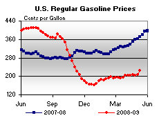 | 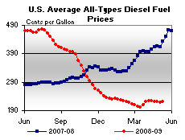 | ||||||
| Retail Data | Changes From | Retail Data | Changes From | ||||
| 05/11/09 | Week | Year | 05/11/09 | Week | Year | ||
| Gasoline | 224.0 | Diesel Fuel | 221.6 | ||||
| Spot Prices (Cents Per Gallon*) | |||||||||||||||||||||||||||||||||||
| 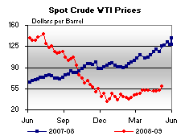 | 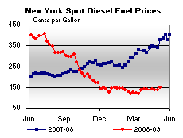 | ||||||||||||||||||||||||||||||||||
| 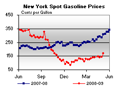 | 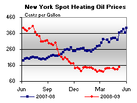 | ||||||||||||||||||||||||||||||||||
|
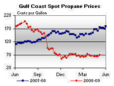 | ||||||||||||||||||||||||||||||||||
| *Note: Crude Oil WTI Price in Dollars per Barrel. | |||||||||||||||||||||||||||||||||||
| Stocks (Million Barrels) | |||||||
| 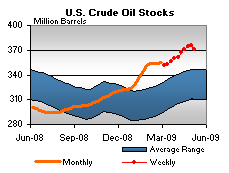 | 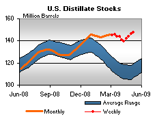 | ||||||
| 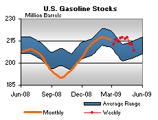 | 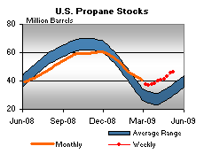 | ||||||
| Stocks Data | Changes From | Stocks Data | Changes From | ||||
| 05/08/09 | Week | Year | 05/08/09 | Week | Year | ||
| Crude Oil | 370.6 | Distillate | 147.5 | ||||
| Gasoline | 208.3 | Propane | 46.193 | ||||